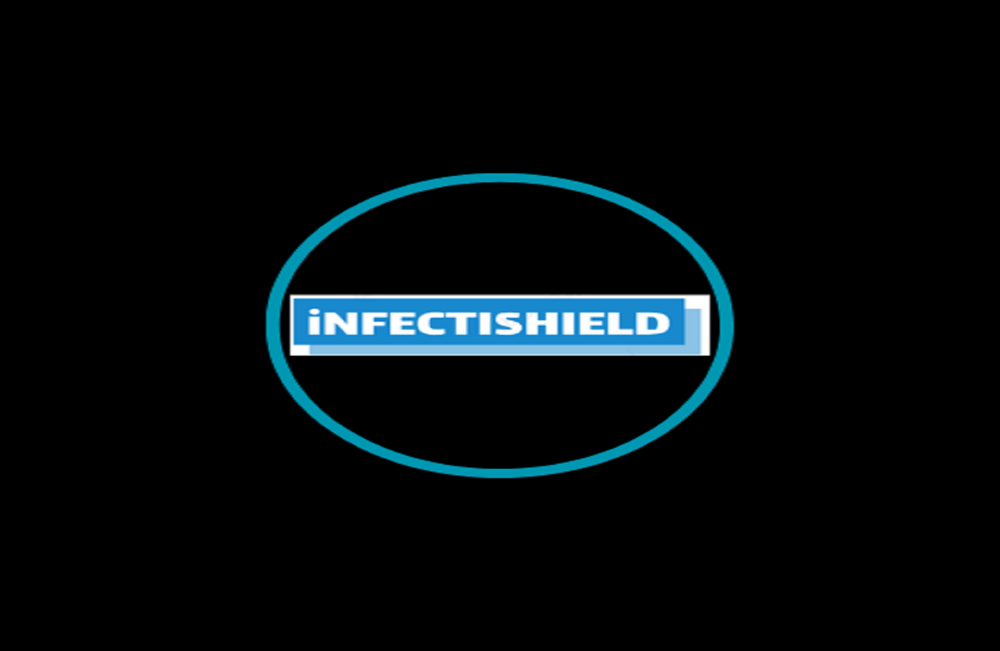

PROJECTS
Here are some of my favourite projects over the years bridging the gaps between
complex questions and actionable answers, featuring projects in Machine Learning, Data Analysis, Business Analysis,
and other Digital Projects in different domains.

InfectiShield represents a significant stride in leveraging machine learning and geographical data to provide users with insightful flu risk predictions
Extending Microsoft Dynamics 365 Business Central with Application Language (AL) and Designing Custom Reports (RDLC)
In 2025, businesses and organisations are becoming more data-driven. Data within organisations and society at large informs decisions instead of intuition
It is widely thought that analytics and AI belong to different worlds; well, if they are, the worlds are converging The future of Data lies at this interesting intersection